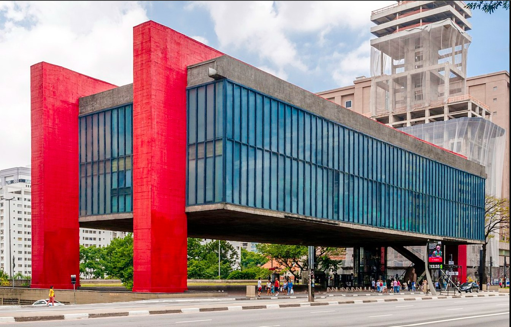

- 
-
Avenida Paulista, n°1578, Bela Vista, SP

(11)3149-5959
Museu de Arte de São Paulo Assis Chateaubriand é um centro cultural e museu brasileiro concebido em 1947 idealizado pelo jornalista paraibano Assis Chateaubriand com o crítico de arte italiano Pietro ...
 voltar
voltar